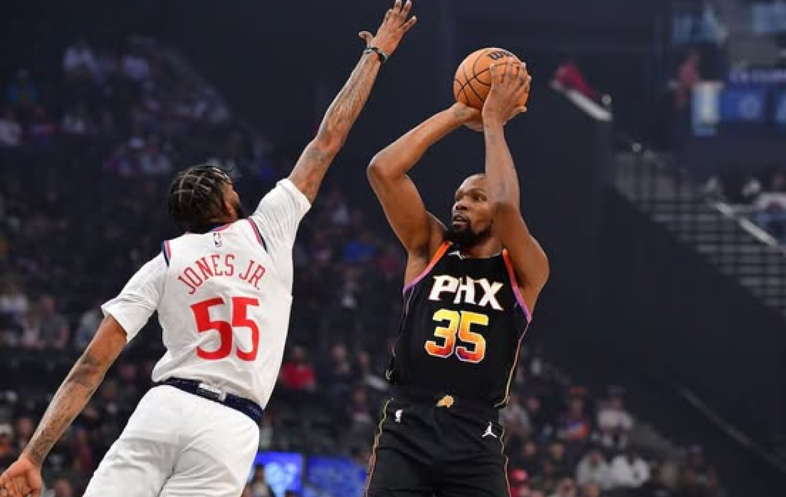
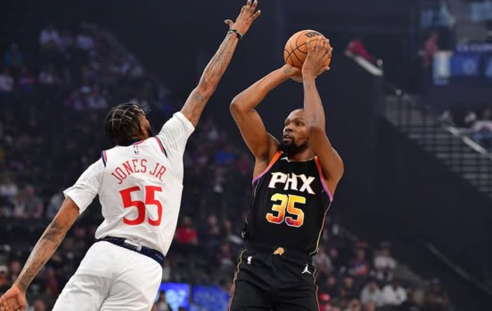

NBA Cup 2024: Así se juegan
las semifinales del torneo.
NBA en vivo: los duelos de hoy
12 de diciembre.
Es oficial. Concluyeron los cuartos de final y solo quedan cuatro
equipos en la pelea por el título de la NBA Cup 2024. Mira
cuándo se juega y cómo lograron conseguir sus lugares.
Atlanta Hawks vs Milwaukee Bucks y Houston Rockets vs Oklahoma
City Thunder serán los protagonistas de la NBA Cup 2024 en Las
Vegas el sábado 14 y el martes 17 de diciembre para disputar el
partido por el campeonato de baloncesto.
La temporada de la NBA continúa su curso esta noche con varios
encuentros que mantienen al borde de sus asientos a los
seguidores del básquet profesional. La cartelera de este jueves
tiene varios enfrentamientos interesantes que pueden sacudir
las cosas en las conferencias.
Toronto Raptors vs Miami Heat
Hora de México: 18:30 horas
Detroit Pistons vs Boston Celtics
Hora de México: 18:30 horas
Sacramento Kings vs New Orleans Pelicans
Hora de México: 19:00 horas